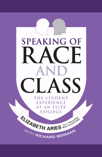

<body bgcolor="#FFFFFF" text="#000000" link="#0000FF" vlink="#CC0000" alink="#CC0000"><center><hr width="350" size="1" align="center" noshade>A sequel to the insightful <i>Race and Class Matters at an Elite College</i> that examines the challenges of diversity from freshman orientation to graduation<hr width="350" size="1" align="center" noshade><p><a href="https://cdcshoppingcart.uchicago.edu/Cart/ChicagoBook.aspx?ISBN=9781439909669&&PRESS=temple" target="_top">Buy this book!</a> | <a href="https://cdcshoppingcart.uchicago.edu/Cart/Cart.aspx?PRESS=temple" target="_top">View Cart</a> | <a href="https://cdcshoppingcart.uchicago.edu/Cart/Cart.aspx?PRESS=temple" target="_top">Check Out</a></p><p></p></center><!--none//--><h1>Speaking of Race and Class</h1>
<H2>The Student Experience at an Elite College</H2>
<h3>Elizabeth Aries with Richard Berman </h3>
<P>cloth 1-4399-0966-0 $90.50, Nov 12, <FONT COLOR=#990033>Available</FONT>
<br>paper 1-4399-0967-9 $30.95, Nov 12, <FONT COLOR=#990033>Available</FONT>
<br>Electronic Book 1-4399-0968-7 $30.95 <FONT COLOR=#990033>Available</FONT>
<BR> 240 pp
6x9
</P><BLOCKQUOTE><I>"Eye-opening. . . . The extensive and well-edited interview material gives students a primary voice. . . . This study teases out the aspects of campus life in which the intersection of race and class may be relevant. . . . Aries makes a compelling case for universities to manage the formal and informal learning environment on campus from a diversity perspective well beyond the admissions process."</I> <br>&#151<b>Publishers Weekly </b> (starred review)</I></BLOCKQUOTE>
<P>In <i>Speaking of Race and Class</i>, the follow-up volume to her groundbreaking <i>Race and Class Matters at an Elite College</i>, Elizabeth Aries collaborates with Richard Berman to complete her four-year study of diversity at a prestigious liberal arts college. Here the fifty-five affluent black, affluent white, lower-income black, and lower-income white Amherst students whom Aries interviewed in their freshmen and senior years provide a complete picture of what (and how) each group learned about issues of race and class
<P>Aries presents the students' personal perceptions of their experiences. She reveals the extent to which learning from diversity takes place on campus, and examines the distinct challenges that arise for students living in this heterogeneous community. Aries also looks more broadly at how colleges and universities across the country are addressing the challenges surrounding diversity. <i>Speaking of Race and Class</i> testifies to the programming and practices that have proven successful.
<BR>&nbsp;<h2>Excerpt</h2><P>Excerpt available at <a href="http://www.temple.edu/tempress">www.temple.edu/tempress</a></p>
<BR>&nbsp;<h2>Reviews</h2>
<p>"</I>Speaking of Race and Class<I> helps to fill a much-needed gap in our understanding of some important issues. The key strength of the book is that, like Aries�s previous book, it looks at both class and race in a controlled and careful way and it allows the reader to see, through the voices of the students, what their experiences have been during their four years at Amherst and how they have processed those experiences and developed as young adults."</I> <br>&#151<b>Richie Zweigenhaft</b>, Dana Professor of Psychology at Guilford College
<p><i>"[T]imely... Aries attempts to measure the distance and its effects on student performance by studying policies to increase diversity on elite campuses.... [the students'] accounts of their own experiences can make for poignant reading.... Aries�s book succeeds in complicating easy prescriptions for improving diversity at elite colleges and showing just how far we are from realizing the promise that affirmative action programs held out at their beginning in the 1960s."</i><br>&#151<b><i>The New Republic</i></b>
<p><i>"</i>Speaking of Race and Class<i> provides valuable insights into the ways in which diversity on campus benefits all students, as well as the complexities in ensuring all students� success. The authors clearly show how students� attitudes about racial and social class-based differences change over four years of living and learning together.... [T]he authors do a magnificent job of highlighting the complexities of experiences that most students have and how they negotiate being on a campus with people from different racial and social class backgrounds."</i><br>&#151<b><i>Teachers College Record</i></b>
<p><i>"One of the study�s strengths lies in its research design....The book can also be recommended for its breadth of coverage of students� experiences and the consideration of the salience of race and class across a wide range of situations.... [T]he authors...aim primarily to document the challenges of class and race at an elite college, for both the privileged and the less privileged. In this, they have admirably succeeded."</i><br>&#151<b><i>Times Higher Education</i></b>
<p><i>"Aries and Berman�s book is accessible and engaging. As students describe their experiences, perspectives, beliefs, and ideas, we see and hear, through their voices, how their learning of self, others, and the world around them evolves. The book offers an in-depth look at how engaging with diversity during college years impacts what students learn about themselves and others in distinct ways."</i><br>&#151<b><i>Contemporary Sociology</i></b>
<BR>&nbsp;<h2>Contents</h2><P>
<p>Preface
<br>Acknowledgments
<br>1. Race and Class on Campus: Four Students� Stories
<br>2. Moving in and the Challenges of Class
<br>3. Bridging Two Worlds
<br>4. Racial Insults
<br>5. Black on Black
<br>6. Black and White: Seeing Race Anew
<br>7. Haves and Have-Nots: Seeing Class Anew
<br>8. Where We Are
<br>9. Where Do We Go from Here?
<br>Appendix A: Online Survey Measures
<br>Appendix B: Interview Questions
<br>Notes
<br>References
<br>Index</p>
</P><BR>&nbsp;<H2>About the Author(s)</H2>
<P><b>Elizabeth Aries</b> is Professor of Psychology at Amherst College. She is the author of <i>Men and Women in Interaction: Reconsidering the Differences; Adolescent Behavior: Readings and Interpretations</i>; and <i><a href="1941_reg.html" target="_top">Race and Class Matters at an Elite College</a></i> (Temple).</P>
<P><b>Richard Berman</b> is an independent scholar and singer/songwriter.</P>
<BR><H2>Subject Categories</H2>
<p><A HREF="/tempress/race.html" TARGET="_top">Race and Ethnicity</a>
<BR><A HREF="/tempress/education.html" TARGET="_top">Education</a>
<BR><A HREF="/tempress/sociology.html" TARGET="_top">Sociology</a>
</p>
<p align="center"><a href="https://cdcshoppingcart.uchicago.edu/Cart/ChicagoBook.aspx?ISBN=9781439909669&&PRESS=temple" target="_top">Buy this book!</a> | <a href="https://cdcshoppingcart.uchicago.edu/Cart/Cart.aspx?PRESS=temple" target="_top">View Cart</a> | <a href="https://cdcshoppingcart.uchicago.edu/Cart/Cart.aspx?PRESS=temple" target="_top">Check Out</a></p><p><font face="Arial" size="1"><a href="copyright.html" onMouseOver="window.status='Web Copyright Policy';return true;" onMouseOut="window.status=''" title="Web Copyright Policy">&copy;</a> 2015 <a href="http://www.temple.edu" target="new" onMouseOver="window.status='Link to Temple University home page';return true;" onMouseOut="window.status=''" title="Link to Temple University home page">Temple University</a>. All Rights Reserved. http://www.temple.edu/tempress/titles/2248_reg.html</font></p>